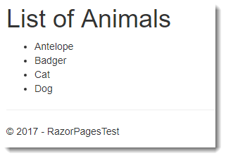

Partial Pages or Views are Razor files containing snippets of HTML and server-side code to be included in any number of pages or layouts. Partial pages can be used to break up complex pages into smaller units, thereby reducing the complexity and allowing teams to work on different units concurrently.
Rendering Partial Pages
Partial pages are included in the calling page in a number of ways. From ASP.NET Core 2.1, the recommended mechanism for including partial pages is the Partial tag helper:
<partial name="_MenuPartial" />
The name attribute takes the name of the partial file, with or without the file extension. The value that you provide the name attribute is case-insensitive. The partial tag helper renders the content of the partial asynchronously thereby improving application performance.
Prior to ASP.NET Core 2.1, you can use the page's Html property which has a Partial() method:
@Html.Partial("_MenuPartial")
The Html property also offers 3 other methods for rendering the content of partial pages: PartialAsync, RenderPartial and RenderPartialAsync. Both methods ending with Async are for rendering partials that contain asynchronous code, although the preferred way to render separate units of UI that are dependent on asynchronous processing is to use ViewComponents. Both of the methods with Render in their name return void whereas the other two methods return an IHtmlString (raw HTML). Therefore the Render methods must be called within a code block as a statement:
@{ Html.RenderPartial("_MenuPartial"); }
The Render methods result in their output being written directly to the response, so they may result in improved performance in certain situations. However, in the majority of cases, these improvements are unlikely to be significant, so the Partial and PartialAsync methods are recommended on the basis that you should strive to minimise the number of code blocks in your Razor page.
Calls to any of the rendering methods do not result in Viewstart files being executed.
Naming And Locating Partial Pages
Whether you use the tag helper or the Html.Partial or Html.RenderPartial methods you do not have to pass in the path of the partial file. The framework searches by walking up the directory tree from the location of the calling page looking for the file name that you pass in as long as you do not include the file extension, until it reaches the root Pages folder. Once this has been exhausted, the formally registered locations are searched. The default registered search paths are Pages/Shared (from ASP.NET Core 2.1 onwards) and Views/Shared (the default location for partial views in an MVC application).
If the calling page is located in Pages/Orders the search for a partial name _Foo.cshtml will include the following locations:
- Pages/Orders/_Foo.cshtml
- Pages/_Foo.cshtml
- Pages/Shared/_Foo.cshtml
- Views/Shared/_Foo.cshtml
If the page calling the partial is located in an area, the search will also start in the currently executing page's folder, and then walk up the directory tree within the area. Once the area folder structure has been exhausted, registered partial locations are searched relative to the area's folder location (i.e. Pages/Shared and Views/Shared within the area). Finally, the registered locations themselves are searched.
The following search locations assume that the calling page in located at Areas/Orders/Pages/Archive/Index.cshtml:
- Areas/Orders/Pages/Archive/_Foo.cshtml
- Areas/Orders/Pages/_Foo.cshtml
- Areas/Orders/Pages/Shared/_Foo.cshtml
- Areas/Orders/Views/Shared/_Foo.cshtml
- Pages/Shared/_Foo.cshtml
- Views/Shared/_Foo.cshtml
If you provide the file name with its file extension, the framework assumes that you are passing in a relative path rooted in the folder containing the current page being executed.
It is possible to add other locations to the default registered search paths (Pages/Shared and Views/Shared) using Razor view engine options in the ConfigureServices method in StartUp. The following code block adds the Pages/Partials folder to the search paths, meaning that you can place partial files there and have them found:
public void ConfigureServices(IServiceCollection services)
{
services.AddMvc().AddRazorOptions(options =>
{
options.PageViewLocationFormats.Add("/Pages/Partials/{0}.cshtml");
});
}
The new location will be added to the end of the list of search locations.
Partial files do not have any kind of special naming requirements. The default site template includes partials named _ValidationScriptsPartial.cshtml and __CookieConsentPartial.cshtml. The leading underscore in the file names is a convention. However, the underscore is not required.
Strongly Typed Partials
Just like standard Razor pages, partial pages support the @model directive specifying the type for the partial's data model. All of the rendering methods have overloaded versions that take a model to be consumed in the partial.
The following example features a standard Razor page named PartialDemo.cshtml along with its PageModel file content (shown first). The PageModel class includes a property named Animals of type List<string> that will be passed from the PartialDemo content page as a model to the partial:
PartialDemo.cshtml.cs
using System;
using System.Collections.Generic;
using System.Linq;
using System.Threading.Tasks;
using Microsoft.AspNetCore.Mvc;
using Microsoft.AspNetCore.Mvc.RazorPages;
namespace RazorPagesTest.Pages
{
public class PartialDemoModel : PageModel
{
public List<string> Animals = new List<string>();
public void OnGet()
{
Animals.AddRange(new[] { "Antelope", "Badger", "Cat", "Dog" });
}
}
}
Here is the content page PartialDemo.cshtml, which includes a partial tag helper passing the Animals property to Partial1.cshtml as its model:
@page
@model PartialDemoModel
@{
}
<partial name="_Partial1" model="Model.Animals" />
And finally the content of the partial, named _Partial1.cshtml with the @model declaration:
@model List<string>
<h1>List of Animals</h1>
<ul>
@foreach (var item in Model)
{
<li>@item</li>
}
</ul>
The PageModel includes a property named Animals, which is a list of strings. This is populated in the OnGet handler and then passed to the partial page in the tag helper.
The partial has an @model directive, specifying that the model for the page is expected to be a list of string. The content is iterated and rendered as an unordered list:

Note that the partial page does not feature an @page directive. That would make the file a full Razor Page and will lead to a NullReferenceException related to the model not being declared when the framework attempts to invoke it - because there is no associated PageModel file.